1) Porchetta
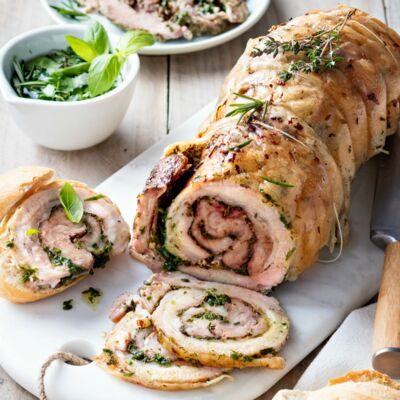Porchetta is a traditional Italian dish made from a boneless pork roast that is seasoned with garlic, salt, fennel, and other herbs and spices. It is often rolled and slow-roasted until tender and flavorful. Porchetta is commonly served as a sandwich or as a main course, accompanied by vegetables or bread.
2) Spaghetti
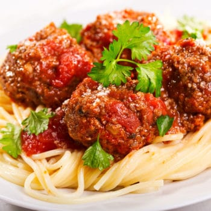spaghetti, thin, straight, cylindrical pasta of Italian origin, the most popular of all pastas eaten today. Noodles made of wheat and eggs were known in the Mediterranean world in antiquity, but the pasta we know as spaghetti—which takes its name from the Italian spaghetto.Throughout Italy, spaghetti is often eaten with a simple tomato sauce. In hot weather, southern Italians enjoy a dish called spaghetti aglio e olio, featuring a sauce of diced garlic lightly cooked in olive oil, into which the cooked spaghetti is then tossed. Spaghetti lends itself to serving with small shellfish such as mussels and clams, and in many Italian households a favourite dish is spaghetti al tonno, spaghetti with tomato sauce and canned tuna.
3) Ravioli
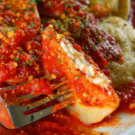Ravioli are part of the Italian tradition, especially in northern Italy. A sheet of very thin, almost transparent pasta is rolled out by hand with a rolling pin or using a pasta machine and then stuffed.Ravioli consist of a wrapping made of egg pasta that can be filled with various ingredients like meat, ricotta cheese and vegetables. They may be homemade or commercially produced.
4) Focaccia
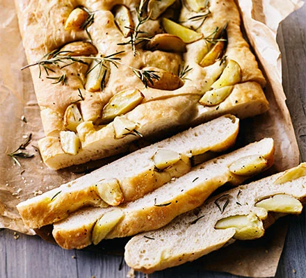Focaccia (pronounced fo-kah-cha) is a flat bread similar to pizza dough that can be either sweet or savory. In Italy, Liguria is the best known region for focaccia, which is called “classica” in Genoa, a focaccia 1/2 to 1 inch thick, with a light crust and an surface full of indentations that hold oil. To be sure to taste focaccia at its best, it is recommended to eat it immediately. Nevertheless, it can be kept up to 2 days enclosed in a bag; in this case, the focaccia should be heated in the oven for a few minutes to reheat it.
5) Pizza
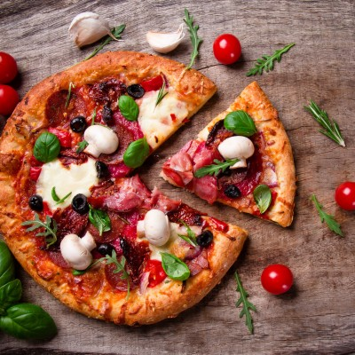A dish made typically of thinly rolled bread dough spread with a spiced mixture usually including tomatoes and cheese and often other toppings and baked. It's also a flat base of leavened wheat-based dough topped with tomatoes, cheese, and often various other ingredients (such as various types of sausage, anchovies, mushrooms, onions, olives, vegetables, meat, ham, etc.), which is then baked at a high temperature,
6) Minestrone
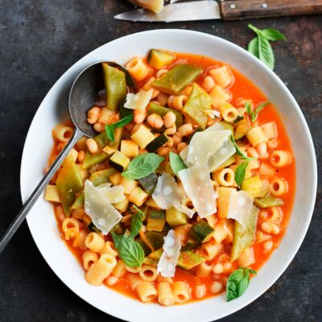Minestrone is a hearty Italian soup made with a mix of vegetables, beans, and pasta in a tomato-based broth. Some common ingredients in minestrone include carrots, celery, onions, potatoes, zucchini, beans, and tomatoes, and it is often flavored with herbs such as basil and rosemary. Minestrone is a filling and nutritious dish that is enjoyed as a main course or as a starter, and it is often served with a drizzle of olive oil and grated parmesan cheese. The recipe can vary greatly based on regional and seasonal ingredients, making it a versatile and adaptable dish.
7) Bruschetta
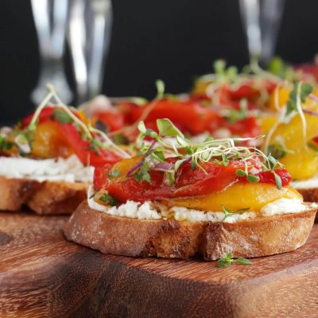Bruschetta (pronounced brew-SKET-tah) is an Italian appetizer or antipasti that starts with a base of toasted or grilled bread. The bread is then served warm either with a topping spooned over or with a topping on the side The best bread for bruschetta has a sturdy crust and is firm enough to hold the bruschetta topping. Choose a loaf of Italian bread, such as ciabatta, for a more traditional bruschetta.
8) Grissini
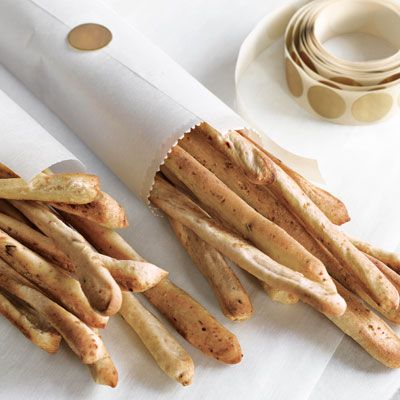Grissini are long, thin pieces of crispy, dry bread. They are better known in many English speaking nations as breadsticks or bread sticks, and they are a popular accompaniment to many Italian meals. Cooks who specialize in other cuisines have also adapted grissini, since they pair well with a variety of foods and they also make an excellent standalone snack. Many markets stock grissini, and they can also be made at home, by cooks who want to tweak the recipe with custom additions.
9) Bistecca Alla Fiorentina

Bistecca alla Fiorentina is an impressive dish of Porterhouse steak done Florentine style. This Florentine steak is a simple recipe, perfect for a summer dinner party. Traditionally, the meat for Bistecca alla Fiorentina comes from an ancient breed of Tuscan cattle, called the Chianina. This breed of cattle is known for their incredibly flavorful meat. In addition to being steak from a specific breed of cattle, this steak is also a very specific cut. Instead of inches, Tuscans measure their steak in “fingers”, and a good bistecca alla fiorentina will be 3-4 fingers thick.
10) Carpaccio
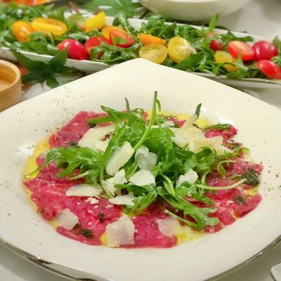Carpaccio, according to Food Republic, is “the Italian term for raw beef filet that has been thoroughly chilled and sliced paper-thin. The slices are arranged on a plate, typically with some shaved Parmesan, capers, salt, pepper, olive oil and lemon juice and a simple arugula salad.
11) Insalata Caprese

Caprese salad (a.k.a. Insalata Caprese or “salad from Capri”) is a classic, crowd-pleasing appetizer, side dish, or light lunch that's as refreshing as it is easy to prepare. The recipe originated in the 1950s at the Trattoria da Vincenzo for lunchtime regulars—they'd simply order a ripe tomato picked off the vine, which would be served with fresh fior di latte (cow's milk mozzarella, as buffalo weren't found on Capri). On the island, the salad evolved to include a few leaves of wild arugula and a pinch of local dried wild oregano, but everywhere else in Italy, basil is tradition.
12) Melanzane Alla Parmigiana

Melanzane alla parmigiana is a dish of slices of breaded, fried eggplant that are layered in a pan, covered in sauce and cheese and baked. This dish almost always has Parmesan cheese on it, but may also have soft, stringy mozzarella. Though melanzane alla parmigiana is either Campanian or Sicilian in origin, this dish is popular throughout Italy and around the world. Outside of Italy, this dish is best known as eggplant parmigiana or eggplant Parmesan. It can also be called or melanzane alla parmaciana or parmigiana di melanzane.
13) Polpette
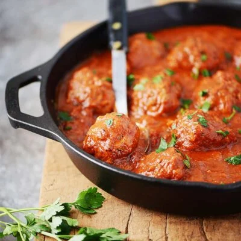Polpette is a word denoting Italian meatballs, traditionally consisting of ground beef or veal (and sometimes pork) that is shaped into small balls. These meatballs are usually enriched with a wide variety of ingredients such as parsley, eggs, garlic, and sometimes even mortadella or Parmigiano Reggiano.
14) Risotto
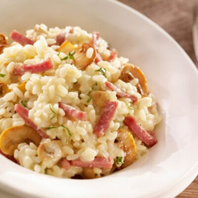Risotto is an Italian dish made by cooking a starchy, short grain rice like arborio with stock until it becomes creamy. When you serve it on a plate, risotto should spread out into a silky, spoonable pool. Because it's made with just a few ingredients, there is a lot of emphasis on the cooking technique: slowly ladling in warm stock to a pan full of rice, stirring until the stock is absorbed, ladling in some more stock and repeating. The dish is often finished with butter and freshly grated Parmesan to really kick up the creamy flavor, although the rice can be a neutral background to whatever you have on hand in the fridge-whether it's a bit of leftover bacon or some gorgeous fresh green peas.
15) Vitello Tonnato

Another northern Italian classic, vitello tonnato, or vitel tonnè in local dialect, is a filling Piedmontese entrée made with white wine-marinated and tender-boiled veal smothered in a velvety tuna, anchovy, and caper sauce. It is traditionally served garnished with capers, parsley, anchovies, and lemon slices. The dish is believed to have been invented in the 1700s, but it wasn't until the mid-1800s when the recipe was first published in La Cucina degli Stomachi Deboli, a cookbook written by a renowned Italian physician and medical researcher Angelo Dubini.
16) Arancini
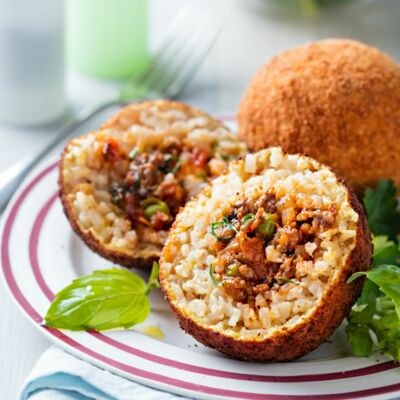Arancini are delicious, crispy, deep fried Sicilian balls of rice. They have a meat sauce and mozzarella cheese filling and crunchy breadcrumb coating. Similar Italian rice balls are called supplì in Rome and the nearby region. The filling in this recipe is one of the most classic—a meat ragù, green peas, and melty mozzarella. The rice is scented with saffron and the rice balls are rolled in breadcrumbs before frying them into croquettes.
17) Tagliatelle al ragu

Tagliatelle al ragu is a traditional Italian pasta dish made with flat, ribbon-like noodles, typically served with a rich meat-based sauce made from ingredients such as ground beef, tomatoes, onions, carrots, and celery. The dish is typically slow-cooked to develop a rich, flavorful sauce that is then tossed with the freshly cooked pasta before serving. It is a classic comfort food that is enjoyed by many people all over the world.
18) Scaloppine
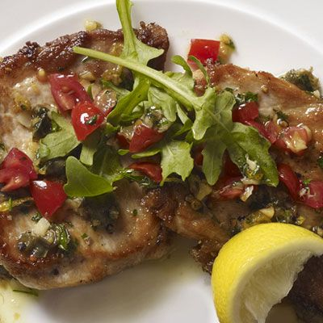Scaloppine is an Italian dish made with thin slices of meat (typically veal or pork) that are pounded to an even thickness, then seasoned and dredged in flour before being quickly pan-fried in butter or oil. The cooked meat is then typically served with a sauce, such as a lemon or wine sauce. Scaloppine can also be filled with cheese, ham or other ingredients before being rolled up and cooked. It is often served with a side dish of pasta or vegetables.
19) Timballo
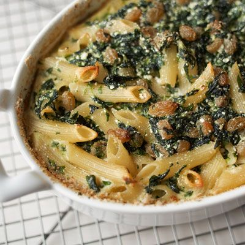Timballo is an Italian baked dish that consists of a mixture of pasta, meat, cheese, and sauce that is layered into a baking dish and then baked in the oven until golden and crispy. The specific ingredients and method of preparation can vary depending on regional traditions and personal preferences, but the dish is typically characterized by a crispy pasta exterior and a rich, savory filling. Timballo is often served as a main dish and is a popular option for special occasions and holidays.
20) Tortellini
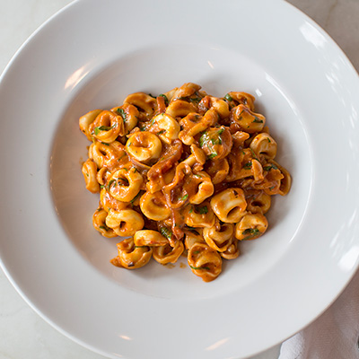Tortellini is a type of Italian filled pasta that consists of a small ring of pasta dough that is stuffed with a filling, typically a mixture of meat (such as prosciutto or mortadella) and cheese (such as parmesan or ricotta). The filled pasta is then typically boiled and served in a broth or with a sauce. Tortellini is a popular dish in central and northern Italy and is often served as a first course or main dish. It is also commonly used in soups and casseroles.
21) Caponata
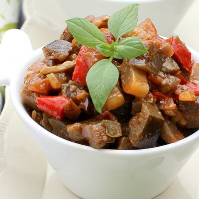Caponata is a traditional Sicilian dish made with a mixture of eggplant, celery, olives, capers, and tomatoes that are simmered together in a sweet and sour sauce. The dish can be served as a side dish or as a main dish, and is often served over bread or with pasta. The specific ingredients and seasoning can vary depending on regional traditions and personal preferences, but caponata is typically characterized by its sweet and sour flavor, as well as its mixture of textures from the tender eggplant and crunchy celery.
22) Cotoletta alla milanese

Cotoletta alla milanese is a traditional Italian dish made with a thin slice of veal that is breaded and fried until golden and crispy. The dish is said to have originated in Milan, and is traditionally made using veal scaloppine that is pounded thin and then coated in breadcrumbs and egg before being fried. The breaded and fried veal is typically served with a side of lemon, and is often accompanied by vegetables, potatoes, or pasta. Cotoletta alla milanese is a popular dish in Italy and is considered a classic example of Italian cuisine.
23) Frittata
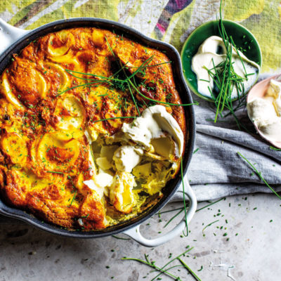Frittata is an Italian-style omelette that is made with beaten eggs and a mixture of ingredients such as cheese, vegetables, and meats. The ingredients are combined in a frying pan and then cooked over low heat until set on the bottom. The frittata is then finished under a broiler or with a lid to cook the top. Frittatas are a popular and versatile dish that can be served for breakfast, lunch, or dinner, and can be customized with a variety of ingredients to suit individual tastes. They are also a convenient option for using up leftovers and can be served hot or cold.
24) Frittura
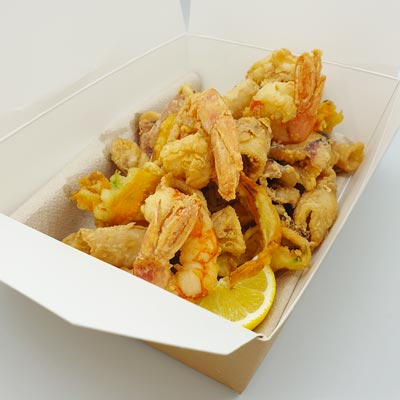Frittura is a traditional Italian dish made with seafood or vegetables that have been battered and deep-fried. The ingredients are usually coated in a light batter made with flour and either beer or sparkling water, and then deep-fried until crispy and golden brown. Frittura is often served as an appetizer or as a main dish, and is often accompanied by lemon wedges or a dipping sauce. The specific ingredients used in frittura can vary depending on regional traditions and personal preferences, but common options include shrimp, squid, zucchini, and eggplant.
25) Ossobuco
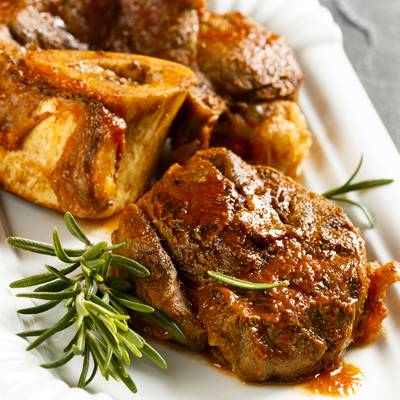Ossobuco is a traditional Italian dish made with veal or beef shanks that are slow-cooked with vegetables, white wine, and broth. The shanks are typically seared on the stovetop to develop a rich, brown crust, and then simmered in a flavorful broth for several hours until the meat is tender and falls off the bone. Ossobuco is often served with gremolata, a mixture of lemon zest, garlic, and parsley, sprinkled over the top to brighten the flavors. The dish is typically enjoyed as a main course and is often accompanied by risotto, polenta, or crusty bread.